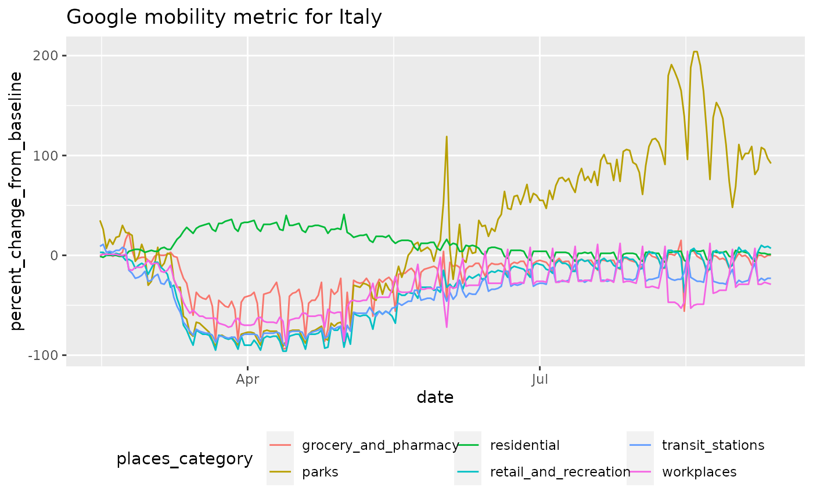

From the Google website: These Community Mobility Reports aim to provide insights into what has changed in response to policies aimed at combating COVID-19. The reports chart movement trends over time by geography, across different categories of places such as retail and recreation, groceries and pharmacies, parks, transit stations, workplaces, and residential.
google_mobility_data(accept_terms = TRUE)
| accept_terms | default is TRUE, but please make sure that you and any downstream users are aware that they are accepting Google's terms of service. See the note below. |
|---|
From Google:
What’s a Community Mobility Report?
Each Community Mobility Report is broken down by location and displays the percent change from baseline in visits to places like grocery stores and parks.
Using this function implies that you agree to the Google terms of service: https://policies.google.com/terms
Google provides this explanation with regard to preserving privacy:
The Community Mobility Reports were developed to be helpful while adhering to our stringent privacy protocols and protecting people’s privacy. No personally identifiable information, such as an individual’s location, contacts or movement, will be made available at any point.
Insights in these reports are created with aggregated, anonymized sets of data from users who have turned on the Location History setting, which is off by default. People who have Location History turned on can choose to turn it off at any time from their Google Account and can always delete Location History data directly from their Timeline.
We also use the same world-class anonymization technology used in our products every day to keep your activity data private and secure. This includes differential privacy, which adds artificial noise to our datasets, enabling us to generate insights while preventing the identification of any individual person.
Other data-import:
acaps_government_measures_data(),
apple_mobility_data(),
beoutbreakprepared_data(),
cdc_aggregated_projections(),
cdc_excess_deaths(),
cdc_social_vulnerability_index(),
coronadatascraper_data(),
coronanet_government_response_data(),
cov_glue_lineage_data(),
cov_glue_newick_data(),
cov_glue_snp_lineage(),
covidtracker_data(),
descartes_mobility_data(),
ecdc_data(),
economist_excess_deaths(),
eu_data_cache_data(),
financial_times_excess_deaths(),
government_policy_timeline(),
healthdata_mobility_data(),
healthdata_projections_data(),
healthdata_testing_data(),
jhu_data(),
jhu_us_data(),
kff_icu_beds(),
nytimes_county_data(),
oecd_unemployment_data(),
owid_data(),
param_estimates_published(),
test_and_trace_data(),
us_county_geo_details(),
us_county_health_rankings(),
us_healthcare_capacity(),
us_hospital_details(),
us_state_distancing_policy(),
usa_facts_data(),
who_cases()
Other mobility:
apple_mobility_data(),
descartes_mobility_data(),
healthdata_mobility_data()
res = google_mobility_data()#> Warning: 491900 parsing failures. #> row col expected actual file #> 1385623 census_fips_code 1/0/T/F/TRUE/FALSE 01001 '/tmp/RtmpQprAA9/BiocFileCache/319491ebe11_Global_Mobility_Report.csv' #> 1385624 census_fips_code 1/0/T/F/TRUE/FALSE 01001 '/tmp/RtmpQprAA9/BiocFileCache/319491ebe11_Global_Mobility_Report.csv' #> 1385625 census_fips_code 1/0/T/F/TRUE/FALSE 01001 '/tmp/RtmpQprAA9/BiocFileCache/319491ebe11_Global_Mobility_Report.csv' #> 1385626 census_fips_code 1/0/T/F/TRUE/FALSE 01001 '/tmp/RtmpQprAA9/BiocFileCache/319491ebe11_Global_Mobility_Report.csv' #> 1385627 census_fips_code 1/0/T/F/TRUE/FALSE 01001 '/tmp/RtmpQprAA9/BiocFileCache/319491ebe11_Global_Mobility_Report.csv' #> ....... ................ .................. ...... ...................................................................... #> See problems(...) for more details.colnames(res)#> [1] "iso2c" "country_region" #> [3] "admin1" "admin2" #> [5] "metro_area" "iso_3166_2_code" #> [7] "census_fips_code" "date" #> [9] "admin_level" "places_category" #> [11] "percent_change_from_baseline"head(res)#> # A tibble: 6 x 11 #> iso2c country_region admin1 admin2 metro_area iso_3166_2_code census_fips_code #> <chr> <chr> <chr> <chr> <chr> <chr> <lgl> #> 1 AE United Arab E… <NA> <NA> <NA> <NA> NA #> 2 AE United Arab E… <NA> <NA> <NA> <NA> NA #> 3 AE United Arab E… <NA> <NA> <NA> <NA> NA #> 4 AE United Arab E… <NA> <NA> <NA> <NA> NA #> 5 AE United Arab E… <NA> <NA> <NA> <NA> NA #> 6 AE United Arab E… <NA> <NA> <NA> <NA> NA #> # … with 4 more variables: date <date>, admin_level <dbl>, #> # places_category <chr>, percent_change_from_baseline <dbl>#> Rows: 11,453,802 #> Columns: 11 #> $ iso2c <chr> "AE", "AE", "AE", "AE", "AE", "AE", "AE"… #> $ country_region <chr> "United Arab Emirates", "United Arab Emi… #> $ admin1 <chr> NA, NA, NA, NA, NA, NA, NA, NA, NA, NA, … #> $ admin2 <chr> NA, NA, NA, NA, NA, NA, NA, NA, NA, NA, … #> $ metro_area <chr> NA, NA, NA, NA, NA, NA, NA, NA, NA, NA, … #> $ iso_3166_2_code <chr> NA, NA, NA, NA, NA, NA, NA, NA, NA, NA, … #> $ census_fips_code <lgl> NA, NA, NA, NA, NA, NA, NA, NA, NA, NA, … #> $ date <date> 2020-02-15, 2020-02-15, 2020-02-15, 202… #> $ admin_level <dbl> 0, 0, 0, 0, 0, 0, 0, 0, 0, 0, 0, 0, 0, 0… #> $ places_category <chr> "retail_and_recreation", "grocery_and_ph… #> $ percent_change_from_baseline <dbl> 0, 4, 5, 0, 2, 1, 1, 4, 4, 1, 2, 1, -1, …# analyze the "admin levels" available for each # country: admin_by_country = res %>% dplyr::group_by(iso2c) %>% dplyr::filter(date == max(date)) admin_by_country = table(admin_by_country$admin_level, admin_by_country$iso2c)/length(unique(res$places_category)) admin_by_country#> #> AE AF AG AO AR AT AU AW BA BB BD BE BF BG BH #> 0 1 2 1 1 1 1 1 1 1 1 1 1 1 1 1 #> 1 7 0 4 4 24 9 8 0 0 7 0 3 4 28 0 #> 2 0 0 0 0 416 88 291 0 0 0 0 10 0 112 0 #> #> BJ BO BR BS BW BY BZ CA CH CI CL CM CO CR CV #> 0 1 1 1 1 1 1 1 1 1 1 1 1 1 1 1 #> 1 4 9 27 3 9 0 5 13 26 11 16 10 31 0 3 #> 2 0 43 2303 0 0 0 0 0 0 0 54 17 319 0 0 #> #> CZ DE DK DO EC EE EG ES FI FJ FR GA GB GE GH #> 0 1 1 1 1 1 1 3 1 1 1 1 1 1 2 3 #> 1 14 16 5 29 24 14 27 19 18 0 13 3 151 0 0 #> 2 0 0 94 0 118 0 0 43 65 0 96 0 0 0 0 #> #> GR GT GW HK HN HR HT HU ID IE IL IN IQ IT JM #> 0 1 1 1 1 1 1 2 1 1 1 1 1 1 1 1 #> 1 7 22 0 0 17 21 7 20 34 26 6 36 0 20 14 #> 2 0 0 0 0 41 0 0 0 0 0 13 0 0 106 0 #> #> JO JP KE KG KH KR KW KZ LA LB LI LK LT LU LV #> 0 2 1 5 1 1 2 2 1 1 1 1 1 1 1 1 #> 1 11 47 36 7 22 0 6 0 0 8 0 0 10 0 38 #> 2 0 0 0 0 0 0 0 0 0 23 0 0 0 0 0 #> #> LY MA MD MK ML MM MN MT MU MX MY MZ NE NG NI #> 0 1 4 1 1 2 3 1 1 1 1 1 1 2 1 2 #> 1 6 0 0 0 0 0 1 0 10 32 16 10 5 37 15 #> 2 0 0 0 0 0 0 0 0 0 0 0 14 0 180 0 #> #> NL NO NP NZ OM PA PE PG PH PK PL PR PT PY QA #> 0 1 1 1 1 1 2 1 1 9 13 1 1 1 1 2 #> 1 12 11 0 16 11 0 26 0 17 8 16 69 20 17 0 #> 2 0 171 0 0 0 0 110 0 0 0 380 0 191 0 0 #> #> RE RO RS RU RW SA SE SG SI SK SN SV TG TH TJ #> 0 1 1 2 17 1 1 1 1 1 1 1 1 1 1 2 #> 1 2 42 0 0 5 13 21 0 57 8 12 14 3 0 0 #> 2 0 261 0 0 7 0 270 0 96 78 0 0 0 0 0 #> #> TR TT TW TZ UA UG US UY VE VN YE ZA ZM ZW #> 0 1 1 1 1 2 1 1 2 1 1 1 1 2 1 #> 1 81 0 0 22 0 4 51 19 0 63 0 9 0 10 #> 2 499 0 0 35 0 17 2707 0 0 0 0 0 0 12# Italy mobility over time # Note day-of week effect in plot library(ggplot2) res %>% ## Italy, whole country(admin == 0) dplyr::filter(iso2c == "IT" & admin_level==0) %>% ggplot(aes(x=date,y=percent_change_from_baseline,color = places_category)) + geom_line() + ggtitle('Google mobility metric for Italy') + theme(legend.position='bottom')